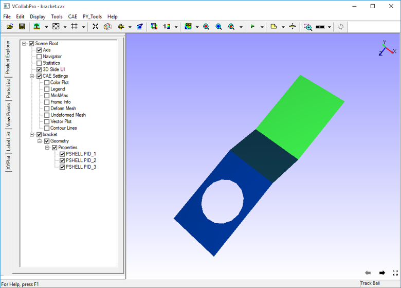

Color Plot
The Color Plot option within the Display sub menu allows users to toggle between applying and removing Contour / Color plot information from the viewer.
While this option removes contour information from the model, Legend Information too is hidden.
Step to Apply/ Remove Color Plot
- Click CAE| Color Plot|Display or use the shortcut key : Ctrl+T or check the Color Plot checkbox in the Product explorer.
Below is the image after removing the contour or color plot from the model.
